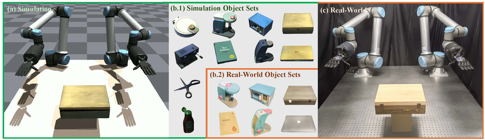

Despite being trained only in simulation, our system demonstrates zero-shot transfer to two real-world robots equipped with the dexterous hand.
Abstract
Manipulating objects to achieve desired goal states is a basic but important skill for dexterous manipulation. Human hand motions demonstrate proficient manipulation capability, providing valuable data for training robots with multi-finger hands. Despite this potential, substantial challenges arise due to the embodiment gap between human and robot hands. In this work, we introduce a hierarchical policy learning framework that uses human hand motion data for training object-centric dexterous robot manipulation. At the core of our method is a high-level trajectory generative model, learned with a large-scale human hand motion capture dataset, to synthesize human-like wrist motions conditioned on the desired object goal states. Guided by the generated wrist motions, deep reinforcement learning is further used to train a low-level finger controller that is grounded in the robot's embodiment to physically interact with the object to achieve the goal. Through extensive evaluation across 10 household objects, our approach not only demonstrates superior performance but also showcases generalization capability to novel object geometries and goal states. Furthermore, we transfer the learned policies from simulation to a real-world bimanual dexterous robot system, further demonstrating its applicability in real-world scenarios.
Method

(A) Training: Firstly, we use human motion capture data to train a generation model to synthesize dual hand trajectory conditions on object trajectory. Then we use the RL to train a low-level robot controller conditioned on the dual hand trajectory generated by the trained high-level planner. During this process we augment the data in simulation to improve the high-level planner and low-level controller simultaneously. (B) Inference: Given a single object goal trajectory, our framework generates dual hand reference trajectory and guides the low-level controller to accomplish the task.
Experiments
Environment Setups
Overview of the environment setups:
(a). Workspace of the simulation. We employ two Shadow Hands, each individually mounted on separate UR10e robots, arranged in an abreast configuration.
(b). Object sets in the simulation and the real-world.
(c). Workspace of the real-world, mirroring the simulation, the robot system uses the same Shadow Hands and UR10e robots as the simulation.
Import Human Motion Capture Data to Simulation
Optimizing Human Mocap Data via Reinforcement Learning
Learning Object-Centric Dexterous Manipulation in Isaac-Gym
Upper Right Video: High-level planner output (wrist motion generation). Object motion replay for visualization.
Lower Video: Low-level policy output (finger + wrist motion). Fully autonomous results, no object motion replay.